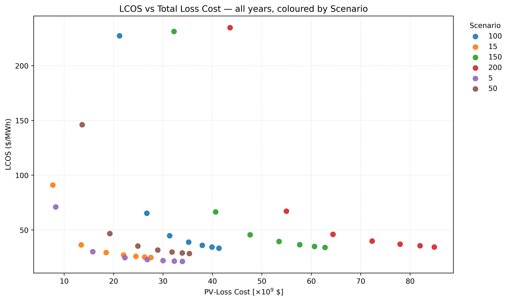
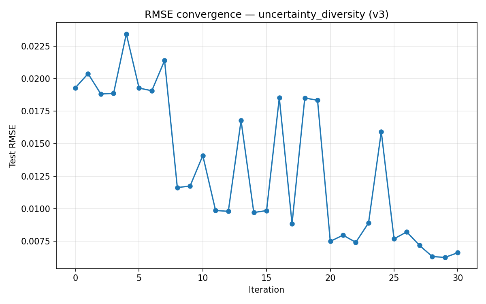

GB Battery Dispatch & Market Analytics
A workflow for GB residual-load analysis, price estimation, and constrained battery scheduling using electricity-market data.
View project
Energy systems · Optimisation · Analytics
Energy Modeller
I build transparent, data-driven models that turn complex energy-system questions into decision-ready insights. My work combines power-market analytics, energy-storage optimisation, surrogate modelling, and uncertainty analysis, supported by robust Python and C++ workflows.
As a PhD graduate in energy systems, I have developed GB battery-dispatch and market-analysis tools, evaluated more than 200,000 storage strategies across 96 UK sites, and automated thousands of modelling runs.
Selected work
A workflow for GB residual-load analysis, price estimation, and constrained battery scheduling using electricity-market data.
View project
Neural-network surrogates and mixed-integer optimisation for comparing underground hydrogen-storage strategies and identifying cost-effective UK portfolios.
View project
Gaussian Process surrogates, uncertainty-driven sampling, and automated high-performance computing campaigns for efficient subsurface simulation.
View projectCoupled numerical modelling of the physical, chemical, and biological processes that affect hydrogen purity and recovery in depleted gas reservoirs.
View projectResearch output
International Journal of Hydrogen Energy, 106, 790–805
PaperChemical Engineering Journal, 507, 160143
PaperInternational Journal of Hydrogen Energy, 50, 1263–1280
Paper